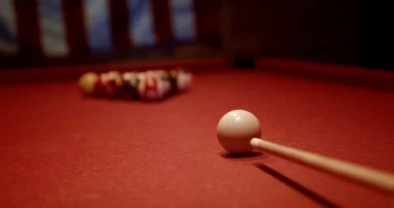

The Art of the Break: Why Precision Matters

Billiards is more than a physical game; it is an immersion into a state of deep focus. At AquaBook, we believe that the moment you lean over the green baize, the noise of the outside world is instantly silenced. For over a decade, we have dedicated ourselves to building facilities that aren't just functional, but engineered for precision.
Our founder, a tournament champion, realized early on that the quality of the table directly impacts performance. This is why we eschewed cheap synthetic cloths in favor of imported Simonis baize and heavily leveled Italian slate. The result is a roll so pure it feels like striking through liquid silk.
"The table does not resist. The cue ball flows. When you strike it perfectly, all you feel is the sweet spot."
Whether you are a competitive player shaving millimeters off your cut angle, or a local resident seeking twenty minutes of strategic meditation after a long day, our tables are meticulously balanced for you. The acoustics of the club dampen the echoes typically found in municipal halls, creating a tranquil environment where you can focus entirely on your cue action.
Building the Community
We hold sportsmanship to the absolute highest standard. Every table is maintained nightly, and our facilities are monitored with subtle but effective safety cameras to ensure that staff can focus on delivering exceptional service. Come join us at the table, and discover your perfect break.